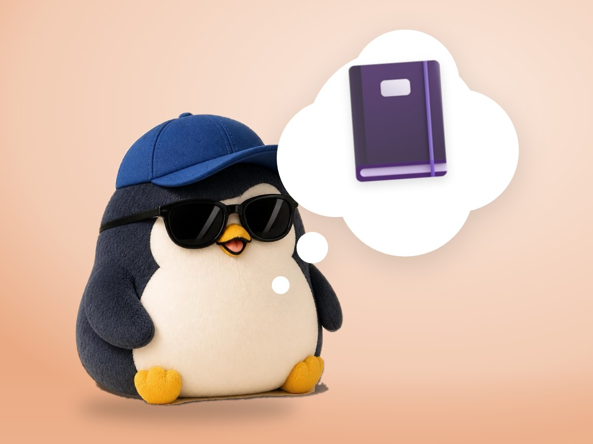

🐧 EVERYDAY LIFE⚡ 22 SEC
Write 3 pages every morning, and do not stop your pen 📓

Morning Pages
Morning pages means this: every morning, you fill 3 notebook pages by hand.
One Rule
The only rule is: do not stop your pen. If you have nothing, write "I have nothing to write."
⚡ TRY IT
Fill 3 pages. Don't stop your pen!
🧠 My head:
📓 Page 1 / 3
I have nothing to write.
I have nothing to write.
I have nothing to write.
I have nothing to write.
I have nothing to write.
Tap either button. Any words are OK.
Keep going! Don't stop your pen. ✍️
3 pages! Your head feels light. ☀️ Now, breakfast.
Outside View
On paper, you can see your worries like someone else's worries.
His Joke
Oliver Burkeman jokes, "I get up at 6 every morning… no, that is a lie." He writes about 4 days a week.
📚 I learned this from Oliver Burkeman's newsletter. Read the original (English)
PREVIOUS POST
Choosing one thing means not choosing millions of other things